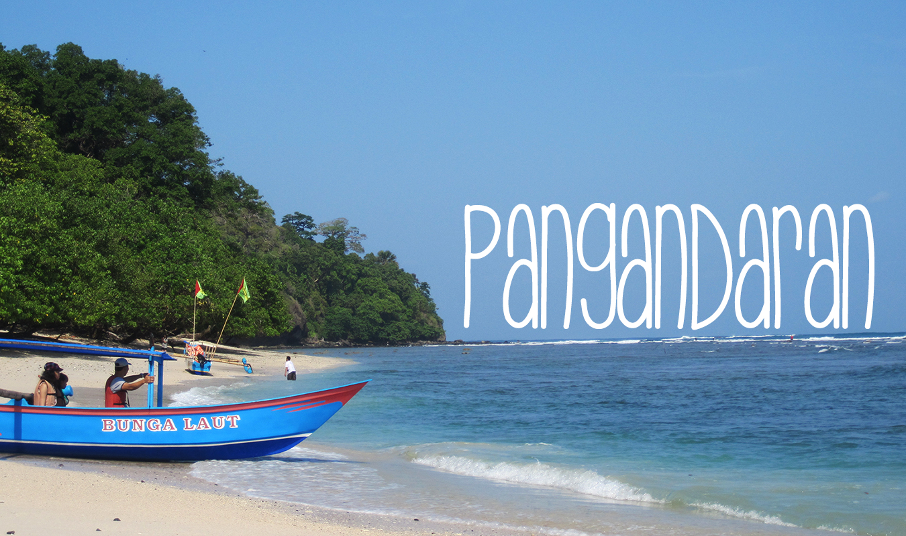

|
|
PARIWISATA KABUPATEN PANGANDARANHome | Profil | Gallery | Kontak |
|---|---|
|

Pantai Pangandaran merupakan sebuah objek wisata andalan Kabupaten Pangandaran (pemekaran dari Kabupaten Ciamis) yang terletak di sebelah tenggara Jawa Barat, tepatnya di Desa Pangandaran dan Pananjung, sekitar 222 km dari selatan Bandung, kecamatan Pangandaran, Kabupaten Pangandaran,Provinsi Jawa Barat. Pantai ini terkenal karena keindahan pasir hitam dan pasir putihnya dan berada di sekitar area Cagar Alam Pananjung. Pantai Pangandaran pernah dinobatkan oleh AsiaRooms sebagai Pantai terbaik di provinsi Jawa Barat. Sebagian besar mata pencaharian masyarakat adalah sebagai nelayan, oleh karena itu, dulu pantai ini mendapat julukan sebagai Kota Nelayan Kecil. Pantai Pangandaran memiliki bentangan pantai yang luas. Pantai ini telah menjadi objek wisaya Pangandaran sejak tahun 2012. Pangandaran merupakan bagian dari selatan Pulau Jawa yang terkenal karena ombak besarnya. Namun pantainya landai dengan rentang waktu antara pasang lautnya yang relatif lama. Ombak pemandangan yang tenang dan pemandangan matahari yang spektakuler membuat pantai ini begitu menawan terlebih ketika sore hari. Kawasannya terbagi menjadi dua bagian yakni pantai Pangandaran Barat dan pantai Pangandara timur. Keduanya dipisahkan oleh daratan yang menjorok jauh ke lautan atau yang biasa disebut sebagai teluk. |
|
PERMROGRAMAN WEB 1EKA PERMANA PUTRA-17101140023105TPLE008 |
|